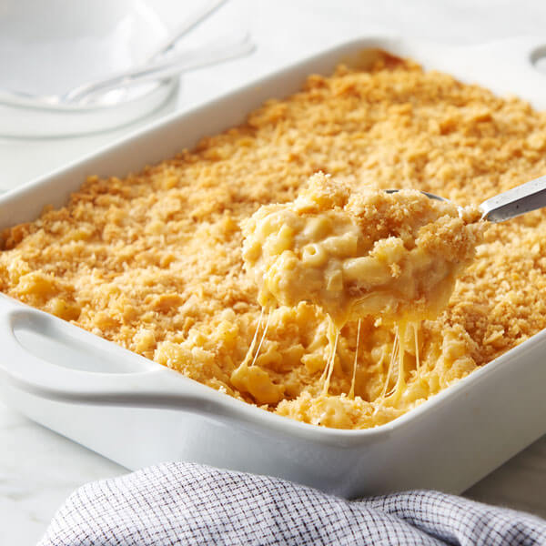

Mac and Cheese

Description
My all time favorite homemade mac and cheese recipe. Creamy cheesey macaroni noodles topped with a crispy layer of cheese.
Ingredients
- 2 cups dried elbow macaroni
- 1/2 pound sharp cheddar cheese, thinly sliced
- 2 large eggs, beaten
- 1/2 cup milk, plus more as needed
- 3 tablespoons butter, melted
- Salt and black pepper to taste
Steps
- In a large pot of boiling salted water, cook the macaroni until just tender, about 8-10 minutes, and drain
- Preheat oven to 350 degrees
- Butter a 2 quart casserole dish, then layer half the macaroni over the bottom, followed by a layer of half the cheese slices, then a layer of the remaining macaroni
- In a small bowl, combine the eggs, 1/2 cup of milk and the melted butter, season with salt and pepper and stir until well blended
- Top with remaining cheese slices and add just enough milk to cover all the macaroni but not the top layer of cheese
- Bake until the custard is slightly firm and the top lightly browned, 25-30 minutes
Return Home